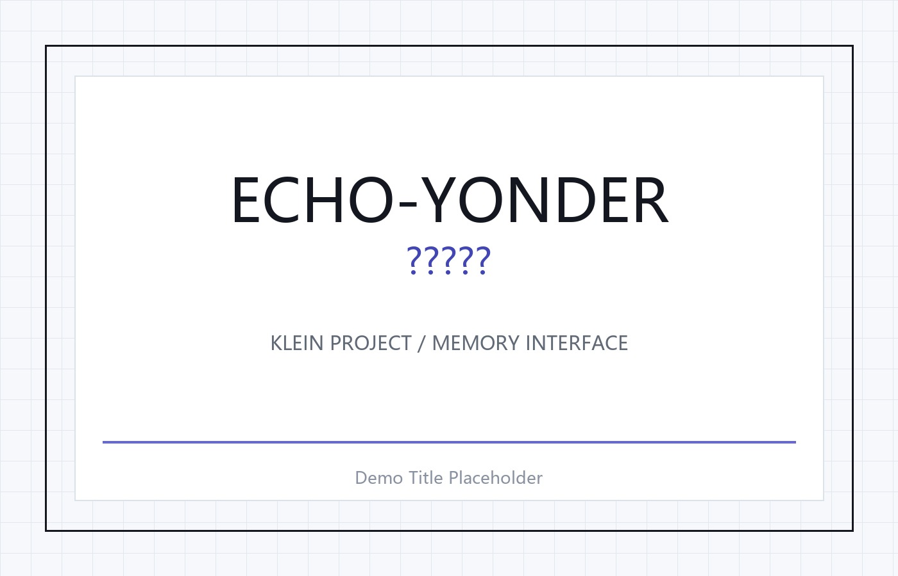
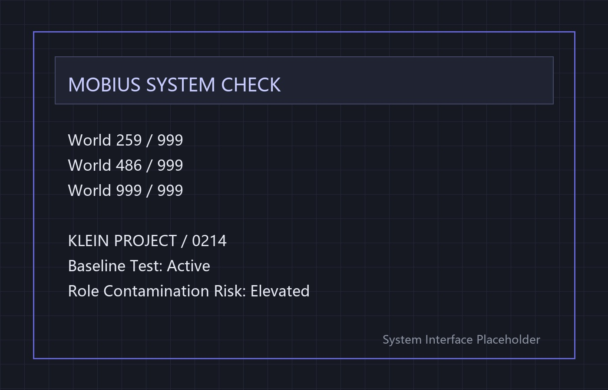
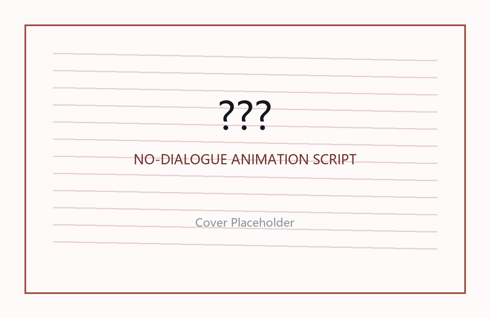

虚构科技机构，负责记忆潜入与意识修复相关实验。
About / 关于我
以文字结构进入游戏叙事。
我目前就读于上海大学上海电影学院戏剧影视文学专业，创作方向包括影视剧本、视觉小说叙事、游戏剧情策划与 AI 辅助创作。相比单纯的故事梗概，我更关注人物关系、叙事机制、场景调度、系统文本与玩家信息获取方式之间的配合。
希望未来参与游戏剧情策划、文案策划、互动叙事设计、视觉小说开发与影视化内容开发相关工作。
剧情大纲
世界观设定
人物关系
角色对白
系统文案
任务文本
视觉小说脚本
玩家输入设计
场景调度
叙事结构
AI辅助创作
PROJECT 01
《彼方的余响 Echo-Yonder》
查看 Demo类型科幻悬疑视觉小说 / Galgame Demo
节点网易 Game Jam 复赛项目
职责编剧 / 剧情策划 / 叙事设计 / UI文本 / 演出协作
工具Ren'Py / VSCode / AI辅助视觉与音乐参考
状态Demo 开发中
《彼方的余响 Echo-Yonder》是一款科幻悬疑视觉小说 Demo。故事围绕“记忆潜入”“意识修复”“身份认知偏差”展开。玩家进入名为 MOBIUS 的实验系统，通过 KLEIN PROJECT 对病患林涟如的深层记忆进行潜入。潜入者苏自牧在任务中被患者意识识别为某位亲密之人，逐渐陷入角色污染、记忆错位与自我认知动摇之中。
记忆潜入
意识修复
身份认知偏差
角色污染
基线测试
记忆锚点
玩家输入
系统崩塌
记忆 / 意识潜入计划，通过人物、物品、时间和场景等锚点进入病患深层记忆。
林涟如是意识潜入对象。她在潜入中将苏自牧识别为某位亲密之人。
潜入者，也是玩家行动的主要视角。他在多次潜入后逐渐怀疑自己的记忆与身份。
Narrative Structure / 叙事结构
第一次潜入：地下偶像活动现场
玩家进入黑色活动空间，目标人物与患者林涟如外貌一致。她将玩家识别为熟人，并提到“四月五号，清明节”等关键时间锚点。
基线测试
苏自牧脱离潜入后接受系统测试。姓名、地点、患者关系、私人关系等问题不断确认他的自我认知是否稳定。
第二次潜入：墓园
苏自牧进入清明节墓园记忆。林涟如给母亲扫墓，橘子、母亲、癌症、MOBIUS 公司成为新的信息线索。
第三次潜入：生日场景
林涟如为苏自牧庆祝生日。蛋糕、皇冠、蜡烛和礼物成为身份确认与记忆错位的关键物件。
身份质问与现实异常
林涟如要求苏自牧证明自己就是“那个人”。苏自牧开始怀疑自己丧失过一段真实记忆，现实与潜入边界进一步模糊。
My Role / 我的职责
从核心概念到系统文本的叙事落地。
- 设计项目核心概念、世界观设定与主要叙事结构。
- 负责主线剧情、人物关系、角色对白与场景文本。
- 撰写系统启动文案、基线测试文本、任务文件、实验日志、外部通报等 UI / 系统文案。
- 设计玩家输入与剧情推进的结合方式，使玩家通过回答问题参与身份确认。
- 参与 Ren'Py 流程落地，与程序协作调整文本、UI、背景、音乐和演出节奏。
- 在短周期 Game Jam 环境下进行剧情压缩、序章重构和 Demo 内容迭代。


Writing Samples / 剧本与文案节选
系统、任务与场景文本。
以下为项目中的部分剧本、系统文案与场景文本节选。网页仅展示短节选，完整剧本可按需提供。
Welcome to MOBIUS
World 259 / 999 World 486 / 999 World 999 / 999 System Check Loading... Welcome to MOBIUS.
KLEIN PROJECT / 0214
病患姓名：林涟如 第二次潜入时间：2035 年 4 月 10 日 09:00 目标记忆时间：清明节，4 月 5 日 目标场景：墓园 任务目标： 一、确认患者对潜入者角色的身份认知。 二、寻找下一处深层记忆锚点。 三、避免引发意识排斥。 风险提示： 本次潜入将由观察转为主动干预。 潜入者存在角色污染风险。 如发生异常，将执行强制脱离。
Cemetery Memory
雨丝疏疏地划着。 她蹲在墓碑前，手臂里挽着伞，手里正摆着水果和花束。 你看了眼左手手表，三十分钟的倒计时开始。 你下意识也弯下腰，撑着伞，帮她摆放手里的橘子。 她淡淡看了你一眼。 林涟如：可以了，已经满了，你手上的就先留着吧。 苏自牧：可以放旁边的。 林涟如：你吃掉它吧。
Baseline
系统音：你的名字是？ 苏自牧：苏自牧。 系统音：基线。 苏自牧：基线。 系统音：当前地点是？ 苏自牧：墨比斯内部实验区。 系统音：目标与你的现实关系是？ 苏自牧：医患。 系统音：是否存在私人关系？ 苏自牧：否。 系统音：患者 0214 想要牵起你的手你会同意吗？ 苏自牧：不会。
PROJECT 02
《苦昼短》
类型水墨风无对白动画短片剧本
形式动画短片剧本 / 影像叙事方案
风格全画面水墨风格
叙事方式无台词对白 / 交叉蒙太奇
主题权力、祭祀、灾年、求生、长生、牺牲
《苦昼短》是一部水墨风无对白动画短片剧本。故事从皇宫祭祀与乡村丧葬两条线并行展开：皇帝祭祀求安，乡村少年在父亲死后被迫承担家庭生计。为了让家中减赋并获得官供廪粮，少年应募前往西北，卷入讨伐烛龙的行动。最终，烛龙血肉被层层呈送至皇宫，皇帝吃下血肉，而少年在父母墓前被鳞片吞没，举起匕首。

皇宫祭祀 / 乡村丧葬
应募从军
西北烛龙
讨伐失败
返乡
血肉进献
墓前结尾 / 皇帝吞食
西北烛龙
穿过枯黄峡谷，视野开阔起来。火烧色天倒映在上苍。 近乎与天齐平的树，翡翠色树叶，赭红色花朵，粗树根，泛冰色大山顶峰，黑水和青水，以及三角交错留下的一大片平原。 平原上有一条浑身通红的龙。
Skills / 技能与工具
围绕文本、结构与落地协作的能力组合。
剧情与文案
- 剧情大纲
- 世界观设定
- 人物关系
- 角色对白
- 系统文案
- 任务文本
- 视觉小说脚本
- 玩家输入设计
- 分支节点设计
- 短片剧本
游戏与文档工具
- Ren'Py 基础使用
- VSCode 基础使用
- Word / WPS / 飞书文档
- notebook
AI辅助创作
- AI 图像提示词
- Suno BGM 提示词
- ComfyUI 基础了解
- 即梦seedance2以及tapnow平台能够灵活使用
- 视觉风格参考整理
- AI 辅助原型设计
Contact / 联系方式
鲍薪行
游戏剧情策划 / 文案策划 / 叙事设计方向